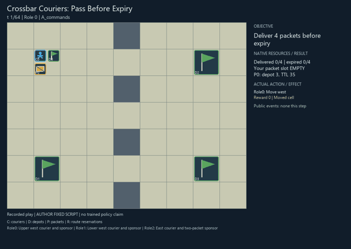
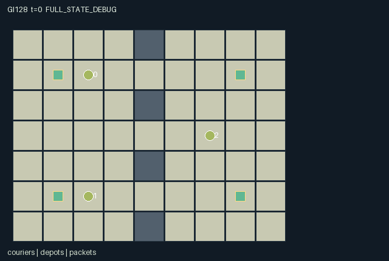

GI128 / SPATIAL
限时过街快递
单件携带、同时同意的交接与短时道路预约互相影响，包裹的目的地局部可见。
Original saved demonstration
Recorded native state, often authored scripts or interventions; information scope and failures are preserved in the original provenance. This is a saved demonstration, not live browser play.

Release verification episode
Untrained uniform legal actions. Actual JAX state sampled along the full original episode; full-state debug camera. No human performance or learning claim.

Run this game
crucibles play --game 128
Start Python locally, then open the address printed by the terminal. Installation, multiplayer, takeover and keyboard controls →
Objective, rewards & ending
Exact task contract
{
"objective": "Carry or relay four expiring packets to their privately assigned opposite-side depots through three shared openings.",
"natural_termination": "All four packets have been delivered or expired; otherwise truncate at 64 nonterminal steps.",
"interaction": "A consenting adjacent handoff transfers the sole packet slot and its destination information. Broadcast single-cell reservations deny entry to other roles for a bounded duration. Conservative simultaneous collision rules prevent swaps and create congestion. Packet sponsorship and last-handler bonuses make help compete with private delivery interests.",
"observation_access": "Fixed wall layout and depot identities are public. Roles observe themselves, couriers within Manhattan distance 3, and active packets within distance 2 or in their own custody. Every hidden packet value, including position, destination, timer, carrier and sponsor, is zeroed behind an explicit visible bit. Reservation locations/timers and delivery/expiry radio receipts are public. Inactive reservation positions remain public historical signals. Private handoff/pickup flags are not declared global scene events. The diagnostic full-state view must be separately labelled."
}Declared per-step reward bounds: -4 to 8. Observability: partially_observable.
Rules
- Each courier has exactly one packet slot. Pick-up requires the same cell; an offer requires an empty adjacent role choosing Accept on that tick.
- An opposite-side destination is sampled privately at reset. Packet attributes are visible only locally or to their carrier.
- Reserve one neighboring road cell for three decision frames. Other roles cannot enter an active reservation, including during its creation tick.
- Old occupied courier cells cannot be entered this tick: no swaps or following into a cell just vacated. Shared target conflicts use rotating priority.
- Packets keep their identity through drops and handoffs. Arrival wins over expiry on the same tick; resolved packets release the slot.
- Delivery gives a shared quarter-point plus one point each to sponsor and final carrier. Expiry penalizes the team and sponsor.
- The scene's packet and courier visibility comes from the same masks used in observations. Only public delivery and expiry receipts appear as global events.
Original mechanism document (historical status wording retained)
# Crossbar Couriers: Pass Before Expiry Status: AUTHORED_NOT_EXECUTED. This is train-only initial source attempt 00, not a replay, animation, training result or accepted scientific finding. The 9 by 7 map has a separator at x=4 with openings at y=1,3,5. Three couriers have unique positions and one packet buffer each. Four permanent packet identities start at four depot locations. Reset draws one independent Bernoulli choice per packet to choose between the two opposite-side depots; raw_step uses no randomness. Initial lifetimes are 36,44,36,44 ticks. Local observations expose a packet only within Manhattan distance two or while carried by the observing role. Courier positions/load are visible within distance three. Map layout, depot indices, route reservations, and packet delivery/expiry radio receipts are public. Packet attributes and entity geometry use the same packet_visible mask. Hidden fields are zero, with separate visible bits. This is an observation-access model, not a cryptographic secrecy claim. Reservations select one neighboring road cell per courier for three frames including the creation frame. They are public, owner-bound and exclusive: other couriers cannot enter, including during creation. Reservation requests resolve in rotating order and existing live reservations retain their claim. Timers decrease before requests and movement. Moving into an old occupied courier cell is forbidden even if its owner moves away; no swaps or same-tick following are allowed. Competing eligible requests for an empty destination use rotating priority. These conservative rules make queues, detours and yielding matter without iterative collision solving. Drop and pickup requests resolve before handoffs. A pickup requires the packet at the courier's exact position and an empty buffer; the lowest available packet index wins. A handoff requires a donor choosing Offer and an adjacent empty receiver choosing Accept. Rotating priority chooses between multiple compatible receivers or donors. Packet custody changes once per successful donor request; newly accepting roles cannot themselves Offer in the same joint action. Carried packet positions follow their current carrier. A packet arriving at its destination is delivered before the same step's expiry check. Resolved packet identities remain in the fixed state with status 2 delivered or 3 expired and carrier -1. There is no duplication, respawn, invisible handoff bonus or packet deletion. Direct end-to-end carriage, a central consenting relay, and a route-reservation convention are proposed alternatives. A courier may pass a packet to free its own slot or retain it for the last-handler bonus; reserving a shortcut may protect a route while delaying a teammate's earlier deadline. Delivery pays everyone 0.25 plus 1 each to sponsor and final handler, which can be the same role. Expiry costs everyone 0.25 and the sponsor another 0.5. The fixed scripts cannot adapt to the private reset draw and make no successful-delivery claim. Failure, deadlock until expiry and poor incentives remain valid outcomes. The scene omits hidden pickup/handoff flags from its global event channel. Actual custody, load and packet motion remain visible only under the observation masks; a separately labelled debug view may inspect full state. Literal action requests, branch metadata and the same seeded reset draw are frozen for independent replay. Future separately specified changes could vary deadlines, destination distributions, route geometry or sponsor incentives; none is evaluated here. ## Contract and evidence boundaries A=3, O=83, U=13, H=64. Observations are flat float32 and action indices int32. Every state leaf has a fixed declared shape. Source byte count is 11912 and SHA-256 is c65118d8ecf1e89844561a43cfb4963d4f32076e80d6592c0d43c0df8e652f47. The manifest binds exactly these bytes; the scene binds the manifest bytes. The raw kernel advances a nonterminal clock once, computes natural completion before truncation, and preserves a terminal input exactly with zero reward. There is no raw autoreset. Illegal indices become Wait; unavailable in-range requests are deterministic no-ops. Every active role has Wait legal. Role disablement is separate from joint done. State bounds and conservation rules are source declarations awaiting numerical R0 checks. Array updates are immutable JAX operations; local dictionary copies have no external mutable state. The two literal scripts and paired suffixes in playthrough.json remain UNEXECUTED_AUTHOR_HYPOTHESIS. Reset uses fold_in(PRNGKey(seed),0); transition k uses fold_in(PRNGKey(seed),k+1). A paired suffix continues at global index len(prefix). Identical branch indices use identical keys. No original script is replaced by an adaptive action search or a successful-looking trace. Static shape/range checks do not establish mask legality or intended events. Stop the future replay at joint done and report any prior invalid request, unavailable interaction or unexpected outcome. Trainability here means a supplied fixed-shape pure-JAX kernel, bounded discrete actions and rewards, explicit observations and masks, and a finite episode contract suitable for later integration. It does not mean learning has been observed. New A/O/U/H require matching policy metadata and weights. Source differences, causal hypotheses and a valid scene do not prove non-isomorphism, strategic richness, meta-learning or transfer. The independent executor must retain negative, failed, missing and indeterminate evidence. The scene is a complete declarative mapping of native entity positions, masks, attributes and events. It contains no synthetic trajectory, decorative state transition, HTML, JavaScript or extra policy information. Actual replay, RGB frames, animation controls, adapter compatibility and learning results remain mandatory later delivery work. ## Literal source evidence - Private reset destination draw: candidate.py:25; literal source: `right_or_bottom = jax.random.bernoulli(key, 0.5, (4,)).astype(jnp.int32)`. - Role observation and rendering use one visibility mask: candidate.py:75; literal source: `pv = s["packet_visible"]`. - Reservations change others' feasible movements: candidate.py:113; literal source: `reserved = jnp.any(jnp.all(proposal[:, None, :] == rp[None, :, :], axis=2) &`. - Congestion and rotating move arbitration: candidate.py:116; literal source: `occupied = jnp.any(jnp.all(proposal[:, None, :] == s["agent_pos"][None, :, :], axis=2) &`. - Consent and buffer capacity govern handoff: candidate.py:147; literal source: `accept = (a == 7) & ~loaded & (jnp.arange(3) != i) & (jnp.sum(jnp.abs(pos - pos[i]), axis=1) == 1)`. - Arrival priority and packet conservation: candidate.py:156; literal source: `delivered = (status == 1) & jnp.all(pp == destination, axis=1)`. - Sponsor and carrier incentives: candidate.py:176; literal source: `reward = 0.25 * jnp.sum(delivered_f - expired_f) + jnp.sum((own + handled) * delivered_f[None, :], axis=1) - 0.5 * jnp.sum(own * expired_f[None, :], axis=1)`. - reset interface: candidate.py:24-60. - observe interface: candidate.py:62-89. - legal_actions interface: candidate.py:91-92. - raw_step interface: candidate.py:94-180. ## Reference attribution - JaxMARL: agent-keyed public adapter concepts; author kernel remains the assigned flat functional interface. - Pgx: explicit legal masks and terminal state concepts from its board-game API; no board implementation or benchmark imported. - Craftax: spatial entities, persistent resources, game-like state and native rendering concepts; no Craftax game code copied. - PureJaxRL and Craftax PPO-RNN baseline: functional vectorized rollout and recurrent-done integration concepts only. They are learner implementations, not generated game libraries and do not replace the frozen learner. No upstream source code was copied. Only the supplied official snapshot excerpts were read; no network access, prior candidate source, project outcome, heldout implementation or final test was used. - references\JaxMARL_README.md; SHA-256 6649d04f5ed05d620e78e8416a00d4db841cf2633ae60fdb3c9729e037a71c15; https://github.com/bold-lab-ai/JaxMARL/blob/main/README.md - references\Pgx_README.md; SHA-256 153f44999e55d5df3e51e13dee6ef418cc9704ddfa26206f1dc5789b9cbbf8df; https://github.com/sotetsuk/pgx/blob/main/README.md - references\PureJaxRL_README.md; SHA-256 d5f40182c924a42cec820931e61a7d5070e48c4c8413c7d16455abc6ea0ef6b0; https://github.com/luchris429/purejaxrl/blob/main/README.md - references\Craftax_Baselines_ppo_rnn.py; SHA-256 5f93e6a7c3a1e0c551831d75be311735ba495dfdecae51787a1c03a27b1cd011; https://github.com/MichaelTMatthews/Craftax_Baselines/blob/main/ppo_rnn.py - references\Craftax_README.md; SHA-256 7f9757a2047143cf183f7e2e84851a740f386af80dbee050c89b316d66a3d3ff; https://github.com/MichaelTMatthews/Craftax/blob/main/README.md
Commands
Roles & abilities
agent_0 Upper west courier and sponsor
agent_1 Lower west courier and sponsor
agent_2 East courier and two-packet sponsor
Observation permissions
Training receives only the original observation rows. Role cameras use declared visibility; debug cameras are explicitly marked. Local benchmark records log debug exposure and role takeover history.
Exact observation layout
[
{
"slice": [
0,
3
],
"meaning": "Role one-hot in role index order",
"visibility": "self"
},
{
"slice": [
3,
5
],
"meaning": "Own [x,y] divided by 8",
"visibility": "self"
},
{
"slice": [
5,
6
],
"meaning": "Own one-slot buffer occupancy",
"visibility": "self"
},
{
"slice": [
6,
7
],
"meaning": "Own movement request blocked on latest step",
"visibility": "self"
},
{
"slice": [
7,
19
],
"meaning": "Three couriers in index order, each [visible, x/8, y/8, load]; visible iff Manhattan distance <=3; hidden attributes zero",
"visibility": "local"
},
{
"slice": [
19,
51
],
"meaning": "Four packet identities in index order, each [visible, x/8, y/8, destination/4, ttl/64, status/4, carrier/4, sponsor/4]; hidden attributes zero",
"visibility": "local"
},
{
"slice": [
51,
59
],
"meaning": "Four depot [x,y] pairs divided by 8",
"visibility": "public"
},
{
"slice": [
59,
65
],
"meaning": "Three current or historical reservation [x,y] pairs divided by 8",
"visibility": "public"
},
{
"slice": [
65,
68
],
"meaning": "Reservation timers divided by 4, in owner role order",
"visibility": "public"
},
{
"slice": [
68,
71
],
"meaning": "Reservation active flags in owner role order",
"visibility": "public"
},
{
"slice": [
71,
75
],
"meaning": "Per-packet public delivery receipt flags for latest step",
"visibility": "public"
},
{
"slice": [
75,
79
],
"meaning": "Per-packet public expiry receipt flags for latest step",
"visibility": "public"
},
{
"slice": [
79,
80
],
"meaning": "Clock t divided by 64",
"visibility": "public"
},
{
"slice": [
80,
81
],
"meaning": "Total delivered packet count divided by 4",
"visibility": "public"
},
{
"slice": [
81,
82
],
"meaning": "Total expired packet count divided by 4",
"visibility": "public"
},
{
"slice": [
82,
83
],
"meaning": "Joint episode completion flag",
"visibility": "public"
}
]Entity visibility & attributes
[
{
"id": "couriers",
"kind": "agent",
"count": 3,
"position": [
"agent_pos"
],
"active": [
"agent_active"
],
"visibility": [
"agent_visible"
],
"attributes": [
{
"state_path": [
"agent_load"
],
"meaning": "One-slot buffer occupied",
"display": "flag"
}
]
},
{
"id": "depots",
"kind": "landmark",
"count": 4,
"position": [
"depot_pos"
],
"active": [
"depot_active"
],
"visibility": [
"depot_visible"
],
"attributes": []
},
{
"id": "packets",
"kind": "object",
"count": 4,
"position": [
"packet_pos"
],
"active": [
"packet_active"
],
"visibility": [
"packet_visible"
],
"attributes": [
{
"state_path": [
"packet_status"
],
"meaning": "0 ground; 1 carried; 2 delivered; 3 expired",
"display": "category"
},
{
"state_path": [
"packet_carrier"
],
"meaning": "Carrier role; -1 none",
"display": "number"
},
{
"state_path": [
"packet_destination"
],
"meaning": "Destination depot index, locally visible",
"display": "category"
},
{
"state_path": [
"packet_ttl"
],
"meaning": "Remaining ticks, locally visible",
"display": "bar"
},
{
"state_path": [
"packet_sponsor"
],
"meaning": "Sponsor role, locally visible",
"display": "category"
}
]
},
{
"id": "route_reservations",
"kind": "landmark",
"count": 3,
"position": [
"reservation_pos"
],
"active": [
"reservation_active"
],
"visibility": [
"reservation_visible"
],
"attributes": [
{
"state_path": [
"reservation_ttl"
],
"meaning": "Ticks remaining including current frame",
"display": "number"
},
{
"state_path": [
"reservation_owner"
],
"meaning": "Only this role may enter the reserved cell",
"display": "category"
}
]
}
]Actual verification & provenance
Per-game execution receipt
{
"game": "gi128",
"status": "PASS",
"verification_revision": 2,
"source_sha256": "c65118d8ecf1e89844561a43cfb4963d4f32076e80d6592c0d43c0df8e652f47",
"seed": 20261101,
"runtime": {
"jax": "0.4.38",
"numpy": "1.26.4",
"devices": [
"TFRT_CPU_0"
]
},
"dimensions": {
"num_agents": 3,
"observation_size": 83,
"num_actions": 13,
"max_steps": 64
},
"checks": {
"eager_reset": {
"status": "PASS",
"seconds": 2.6064159870147705
},
"observation_spaces_legal_masks": {
"status": "PASS",
"seconds": 0.25957393646240234
},
"eager_step": {
"status": "PASS",
"seconds": 3.0962600708007812
},
"jit_reset": {
"status": "PASS",
"seconds": 0.3350374698638916
},
"jit_step": {
"status": "PASS",
"seconds": 1.96942138671875
},
"eager_jit_integer_parity_float_measurement": {
"status": "PASS",
"seconds": 0.0015108585357666016
},
"jit_vmap_reset": {
"status": "PASS",
"seconds": 0.2985966205596924
},
"jit_vmap_step": {
"status": "PASS",
"seconds": 1.4711503982543945
},
"outer_autoreset_api": {
"status": "PASS",
"seconds": 1.5137991905212402
},
"full_original_horizon_episode_and_render": {
"status": "PASS",
"seconds": 0.8915820121765137
}
},
"human_scores": null,
"browser_controls": "PENDING",
"failures": [],
"elapsed_seconds": 13.10284161567688,
"float_parity_max_abs": 0.0,
"numerical_parity": "EXACT",
"raw_terminal_absorbing": "PASS",
"terminal_outer_reset": "PASS",
"episode_steps": 44,
"scripted_random_returns": [
-1.5,
-1.5,
-2.0
],
"terminal": true,
"demo_information": "FULL_STATE_DEBUG",
"demo_frames": 23,
"render_roles_checked": 3
}Chromium control verification
{
"game": "gi128",
"status": "PASS",
"human_scores": null,
"engineering": true,
"checks": [
"catalog_selected_and_real_native_reset",
"keyboard_native_direction_command",
"dom_queue_and_native_step",
"second_participant_ownership_and_native_joint_step",
"all_roles_individually_controllable_no_role_cap",
"explicit_debug_camera",
"release_to_pure_ai_without_reset",
"close_session_preserves_log"
],
"ui_sha256": "96243f9de144b80b5e20a114330e2206bdcd58d3efc9c6f13bbc08b95cacc14d",
"keyboard_action_id": 1,
"seconds": 4.359645128250122
}Original identity and file hashes
{
"id": 128,
"key": "gi128",
"title": "限时过街快递",
"summary": "单件携带、同时同意的交接与短时道路预约互相影响，包裹的目的地局部可见。",
"tags": [
"空间预约",
"货物接力"
],
"family": "spatial",
"dimensions": {
"num_agents": 3,
"observation_size": 83,
"num_actions": 13,
"max_steps": 64
},
"source_sha256": "c65118d8ecf1e89844561a43cfb4963d4f32076e80d6592c0d43c0df8e652f47",
"manifest_sha256": "91fa229fbcac68506f3eb2eb77f7d5216f58f099307ae1d1e668974280d1aeb0",
"files": [
{
"file": "candidate.py",
"sha256": "c65118d8ecf1e89844561a43cfb4963d4f32076e80d6592c0d43c0df8e652f47",
"bytes": 11912,
"origin": "work/exp_2/game_incubator_v3/community_games222_225_visualization_root222_v1/native154_candidate/registry/v2/games/game-v3-00128/candidate.py"
},
{
"file": "manifest.json",
"sha256": "91fa229fbcac68506f3eb2eb77f7d5216f58f099307ae1d1e668974280d1aeb0",
"bytes": 15034,
"origin": "work/exp_2/game_incubator_v3/community_games222_225_visualization_root222_v1/native154_candidate/registry/v2/games/game-v3-00128/manifest.json"
},
{
"file": "scene.json",
"sha256": "6e128cf5241eacdf89100817faf9b5ef7c73b26e1328a98aae4d6f1edb52f72d",
"bytes": 7593,
"origin": "work/exp_2/game_incubator_v3/community_games222_225_visualization_root222_v1/native154_candidate/registry/v2/games/game-v3-00128/scene.json"
},
{
"file": "mechanism.md",
"sha256": "7dbad698cb1486344f5e948f242bdcdf36f23df4dbbe6637890b55283b1c1178",
"bytes": 8908,
"origin": "work/exp_2/game_incubator_v3/sources/game-v3-00128/attempt_00/mechanism.md"
},
{
"file": "playthrough.json",
"sha256": "d18e987f6be0052f2495f64733405bce58c9a0bcb45549742eae4c9a8b4f58fb",
"bytes": 8943,
"origin": "work/exp_2/game_incubator_v3/sources/game-v3-00128/attempt_00/playthrough.json"
}
],
"original_status": "NATIVE154_REFERENCE",
"original_saved_replay": true,
"release_validation": "PASS",
"human_scores": null,
"browser_validation": "PASS"
}